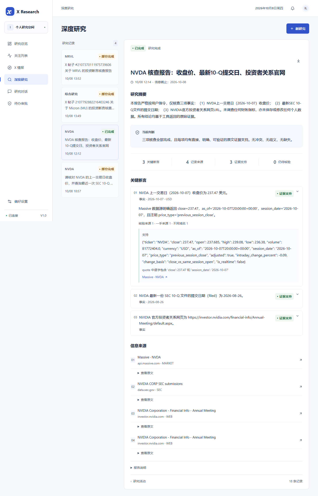

AI Agent 工程案例 · 李林翼 · 2026.08—至今
可追溯的投资观点研究流程
在公开账号的混合帖子中选择一条观点，使用有界工具取证，形成断言与正反证据报告。研究运行持久化，个人资料写入交由人工决定。
3 条断言 / 4 个来源
历史真实 NVDA 案例；0 引文定位警告，不代表语义准确率。
跨重启审批
真实拒绝后未执行；批准与编辑使用隔离数据库夹具。
10 passed / 10 skipped
本次无付费测试；历史数据库与浏览器记录另行登记。
理解工程实现
真实验证界面

边界与贡献
单用户本地 MVP、单 Worker；没有图片理解、观点周报、外部推送、交易、RAG 或多 Agent。本人负责核心需求、流程判断和验证反馈，代码与材料使用 AI Coding 工具协作完成。
目标方案与实现对应见产品技术附录。SIM-R / SIM-E 为研究与评估方法演示；ACT-REC 为历史真实记录；ACT-LOCAL 为确定性夹具实际执行。